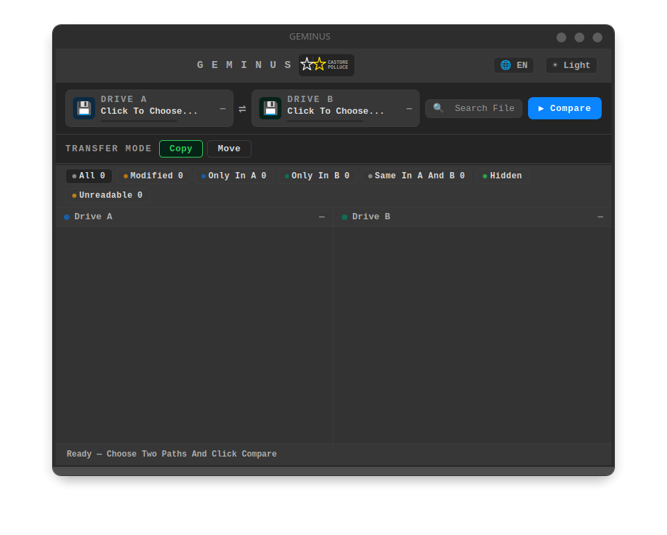
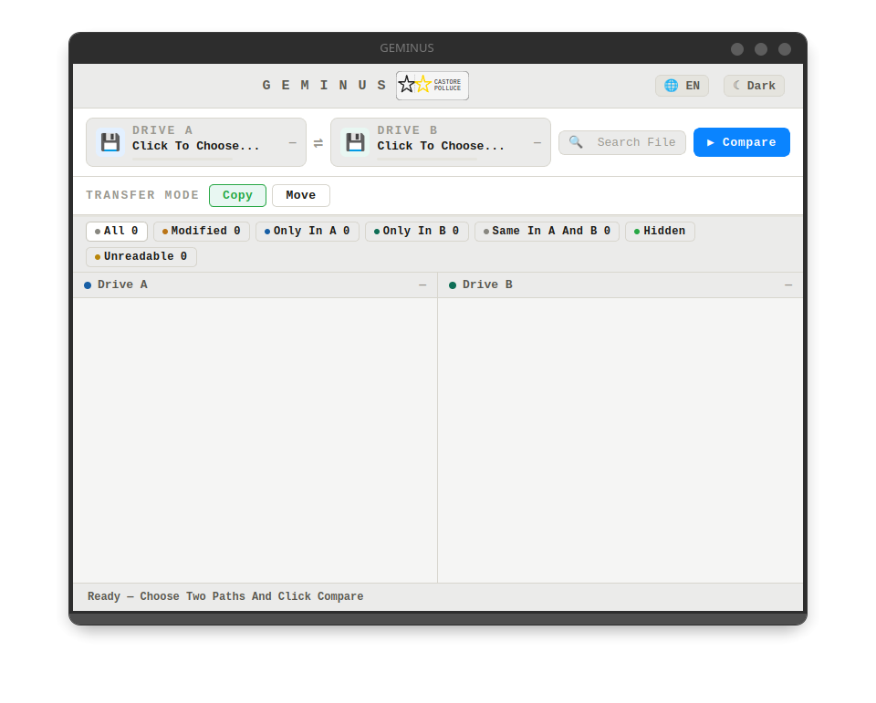

GEMINUS
Compare two disks or folders on Linux and Windows
See exactly what changed between a working drive and its backup — then copy, move or delete the differences yourself. No NAS, no service running in the background, no account.
Free software, GPLv3 · Linux (AppImage, .deb, .rpm) and Windows 10/11 64‑bit
Why
A NAS costs money, and it has to be kept running. Two external drives cost far less and ask for nothing. GEMINUS was born from this simple idea: one working drive and one backup drive, brought in line when you decide, with no dedicated hardware and no system to administer.
GEMINUS is not a NAS — it is a tool for people who want to know exactly what has changed between two drives or folders, and act accordingly. Choose two paths. GEMINUS compares them file by file. You see the differences. You copy, move or delete what you want.
Three ways to compare
Every time you start a comparison, GEMINUS asks how thorough you want to be.
Quick
Looks at file names, sizes and dates. Fast, but doesn't tell you if the contents differ. Good for everyday sync.
Deep
Also reads the contents, to be sure files that look identical really are. Slower, but reliable. Good before an important backup.
Full
Deep, plus a physical health check on the drives. Asks for permission — the administrator password on Linux, the system's own consent window on Windows. Good when you have doubts about an old USB drive.
A damaged drive does not stop the work
When GEMINUS meets a file it cannot read, it doesn't give up on the whole job: it marks that file with a warning and finishes the comparison. At the end you know exactly what could not be read, and where.
What it looks like


Install
Linux
Three formats, take the one you need. AppImage — a single file: make it executable and run it, nothing to install. A .deb package for Debian and derivatives. An .rpm package for Fedora.
Windows
An installer: open it, click through to the end, and GEMINUS lands in the start menu. Needs Windows 10 22H2 or later, 64‑bit. If the machine is missing the system component used to draw the interface, the installation adds it.
The installer is not signed, so Windows shows a security warning before opening it: that is expected, and you get past it by choosing to proceed. A certificate costs money every year, and this is one person's project.
Where it lives
GEMINUS is published in two places, and they carry exactly the same code: Codeberg is home, GitHub is its mirror. Neither is a fork — pick whichever you prefer.